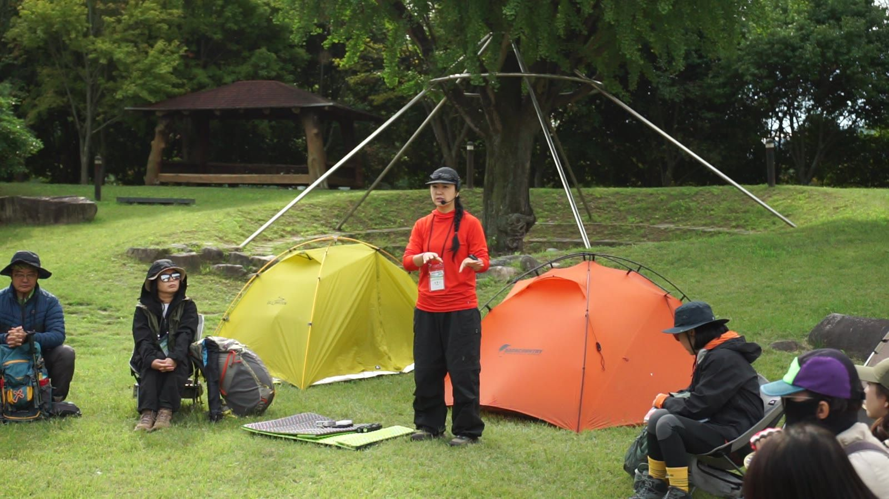

Two days in one backpack starts with carrying less. This is the checklist we teach on our overnight trips in Korea, with notes on what changes with the seasons.
1. Weigh your pack first
Before you think about what to add, put your loaded pack on a scale. Knowing what you carry is the first step to carrying it well, and most people find something they can leave at home. Share group gear, such as a tent or stove, between people so the load is spread out.

2. The big three: tent, sleeping bag, mat
These are the heaviest items and the ones that decide how well you sleep.
- Tent: practise pitching it at home first. Learn the knots for the guy lines.
- Sleeping bag: check its comfort rating against the coldest night you expect, not the daytime forecast.
- Sleeping mat: it keeps the cold ground away from you, and matters as much as the bag in autumn and winter.

3. Layer for Korean mountain nights
Korean mountains can be warm at midday and cold after dark, especially from autumn onward. Instead of one heavy jacket, bring layers you can add and remove:
- A base layer that dries quickly (avoid cotton)
- A warm mid layer, such as fleece or a light down jacket
- A waterproof, windproof shell
- A hat and gloves for the evening and early morning
- Dry clothes to sleep in, kept in a waterproof bag
4. Cooking and light
- Stove and fuel: cook only where it is safe and allowed, on stable ground, and never inside a tent.
- Headlamp, with spare batteries or a charged power bank
- Food that is light and quick to cook, plus snacks for the trail
- Enough water for the trail, and a plan for where to refill
5. On the trail
- Trekking poles: they save your knees on steep climbs and descents.
- A paper or offline map, and the route saved on your phone
- A small first-aid kit, sunscreen and any personal medicine
- A rubbish bag: whatever you bring in, you carry out
Seasonal notes for Korea
- Summer: hot, humid and often wet, especially in the rainy season. Pack rain gear and extra water.
- Autumn: the best hiking season, but nights get cold fast. Layers and a warm bag are essential.
- Winter: icy trails are common. Traction devices for your boots are standard kit on Korean mountains.